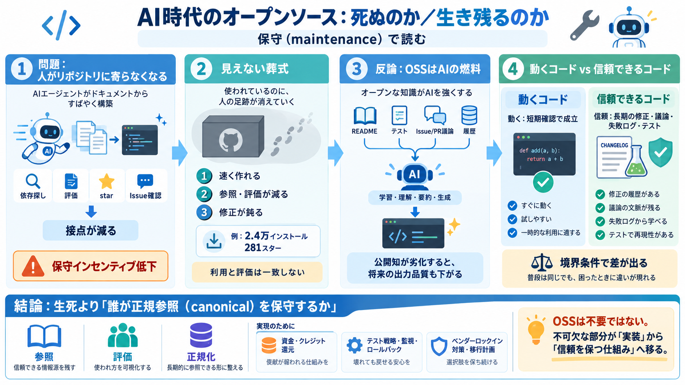

Roo Code Is Shutting Down — 23K Stars, 3M Installs, Killed May 15
Roo Code — the open-source AI coding agent for VS Code with 23,000+ GitHub stars and 3 million installs — is being sunse…

Roo Code — the open-source AI coding agent for VS Code with 23,000+ GitHub stars and 3 million installs — is being sunse…
## 10. Kilo Code: The Multi-IDE Agent With $8M Backing Kilo Code emerged as the primary successor to Roo Code (which is…
VVibecodingHub.org Submit a project Back to Tools Roo Code logo # Roo Code Open-source AI coding agent for VS Code …
Aider is a terminal pair programmer with git integration. Cline is an active IDE and CLI agent with Plan and Act workflo…
2026-04-22 13:49:07 Roo Code pivots to cloud-based agent, says IDEs aren’t the future of coding AI Agents / Open S…